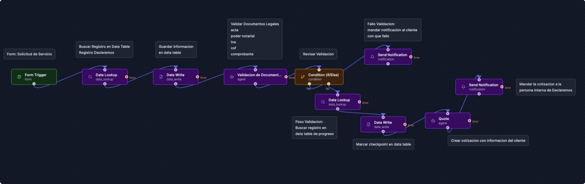

Declaremos is a group of 77 subcompanies that all onboard new business clients the same way: collect legal documents, write a quote, draft a contract, get approvals, and send an invoice. I built a system that automates that entire journey. AI agents validate the client's documents and generate quotes and contracts from the company's own templates, while people stay in control of every approval.
The problem
Every new client meant a long chain of manual steps spread across email threads. Staff had to collect and check Mexican legal and tax documents (articles of incorporation, the representative's official ID, the tax status certificate, and proof of address), write a quote, fill out a contract template by hand, chase approvals from both the internal team and the client, and finally issue the invoice.
With 77 subcompanies following the same process, small delays and missing documents added up, and nobody had a single place to see where each client stood.
The solution
The whole system lives inside Declaremos's workspace on ArcanFlows, an automation platform. It's built from three kinds of pieces:
Workflows
Each step of the process is its own workflow that runs automatically when a form is submitted: saving data, checking conditions, calling AI agents, and sending emails.
Forms
Clients and staff move the process forward through simple forms, from the first client request to approving the final invoice.
Data tables
One table stores everything about each project (28 fields: client info, verified documents, quotes, contracts and invoices). The other tracks 10 progress checkpoints.
Tracking app
An internal app where staff register new clients, search every project's records, and see at a glance which step each project is on.
How it flows
The process runs in three phases. Phases 1 and 3 run step by step. Phase 2 splits into two paths that run at the same time, and invoicing starts only when both are done.
- 1Intake
- 2Validate docs & draft quote
- 3Internal quote approval
- 4Client quote approval
- 5Internal contract approval
- 6Client contract approval
- 7Client kit approval
- 8Internal onboarding confirmation
- 9Send invoice
- 10Client invoice approval
Where the AI comes in
Three steps use AI agents, each handling work that used to take a person the most time:
Document validation
Checks the client's legal and tax documents. If anything fails, the client gets an email explaining exactly what to fix.
Quote generation
Writes a scoped quote with a fee table in Mexican pesos from the client's request, then sends it to staff for review.
Contract drafting
Fills the subcompany's contract template with the client's data and lists any fields a person still needs to complete.

Design decisions
- People stay in control. Every quote, contract and invoice is approved twice: first by Declaremos staff, then by the client. If a client rejects something, their comments go straight back to staff with a link to upload a revised version.
- Secure sharing. Clients view quotes, contracts and invoices through password-protected, read-only links instead of attachments.
- Parallel approvals without duplicates. The contract and the onboarding kit can be approved in either order. Each path checks whether the other is already done, so the "ready to invoice" email is sent exactly once, by whichever finishes second.
- Smart forms. Returning clients who already have a tax file skip the document uploads. If a new client claims they have one, the system automatically rejects the request.
- Built to recover. Every step in every workflow has an error path, so a failure is handled instead of silently stopping a client's project.
Outcome
The system takes each client from first contact to a paid invoice with one shared record and one ID, the Project ID, tying every step together. Staff can see exactly where every project stands in the tracking app instead of digging through email threads, and the slowest manual tasks (checking documents, writing quotes, and drafting contracts) are now handled by AI agents and reviewed by people. At the end, finance automatically receives one secure link with the final quote, signed contract and invoice.